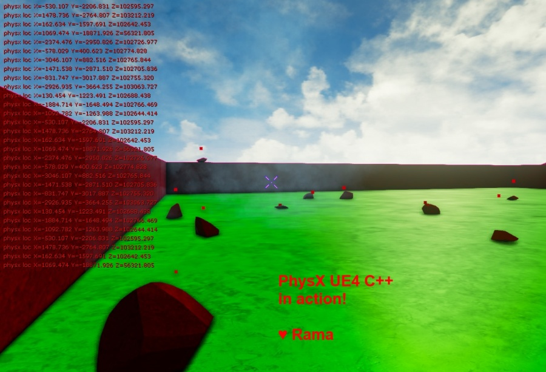

PhysX, Integrating PhysX Code into Your Project
Contents
- 1 Overview
- 2 PhysX 3.3 Source Code For UE4 Developers
- 3 Compiling the PhysX Source Code
- 4 Video of a PhysX Vortex Spiral in UE4
- 5 Pics
- 6 Custom Destructible Mesh Class
- 7 Packaging
- 8 PhysX ~ Basic
- 9 PhysX ~ Advanced
- 10 PhysX ~ How to Get the PhysX Scene & WRITE/READ LOCK
- 11 UE4 4.15+ Entry PhysX Points Into UE4 Engine
- 12 Conclusion
Overview
Author: ( )
In this tutorial I am showing you how you can work with Nvidia PhysX directly in your UE4 code base!
I provide sample code that iterates over all the destructible chunks of a DestructibleComponent and draws their current world space positions to the screen!
PhysX 3.3 Source Code For UE4 Developers
Nvidia has made PhysX3.3 Open Source for all Unreal Engine 4 Developers!
Here's the link to the PhysX 3.3 Source Code
edit: the link is broken but PhysX source code is in the UnrealEngine repo under .../Source/ThirdParty/PhysX/
You must be signed in to a UE4-Linked Github account to view the above link!
Simply sign up for Unreal Engine 4 and then follow the steps to link your github account to UE4.
Compiling the PhysX Source Code
Here's how to compile PhysX source code for UE4 as of 4.8!
Compiling PhysX Source Code for UE4
Video of a PhysX Vortex Spiral in UE4
In this video I am programmatically arranging apex pieces after the mesh is destroyed and the pieces bounce around normally.
I am arranging the pieces into a spiral/vortex formation!
Please notice that the apex pieces continue to have collision with the world and even each other, after I begin spinning them myself via C++!
This is all done via PhysX coding!
There is no measurable performance hit with my current method, my frame rate stays solid at max :)
In other words, I literally cannot detect any drop in performance even after I start the PhysX coding that you see in video below!
<youtube> https://www.youtube.com/watch?v=7KpkQPhvBKA
This video is from my Abatron work in progress thread, UE4 Forum Link: Abatron
Pics
Below you can see I am drawing to screen the world space positions of each chunk of a Destructible Mesh using the PhysX code!
Some of the points can't be seen cause they are hidden inside the little pieces :)
But you can also see I am displaying the locations to the screen! Yay!

Below I added a vertical offset to make the points visible for all chunks!

Enjoy!
Custom Destructible Mesh Class
Here's a custom destructible mesh class you can use to test whether you got the PhysX code setup properly!
This is the code I used for the picture above!
HappyDestructible.h
#pragma once
#include "HappyDestructible.generated.h"
UCLASS()
class AHappyDestructible : public ADestructibleActor
{
GENERATED_UCLASS_BODY()
protected:
virtual void Tick(float DeltaTime) override;
//Drawing!
public:
FORCEINLINE void DrawPoint
(
const FVector& Loc,
const float& Size = 7,
const FColor& Color = FColor::Red,
const float Duration=-1.f
) const {
DrawDebugPoint(
GetWorld(),
Loc,
Size, //thickness
Color,
false,
Duration
);
}
FORCEINLINE void ScreenMsg(const FString& Msg)
{
GEngine->AddOnScreenDebugMessage(-1, 5.f, FColor::Red, *Msg);
}
FORCEINLINE void ScreenMsg(const FString& Msg, const FString& Msg2)
{
GEngine->AddOnScreenDebugMessage(-1, 5.f, FColor::Red, FString::Printf(TEXT("%s %s"), *Msg, *Msg2));
}
};
HappyDestructible.cpp
#include "YourGame.h"
#include "HappyDestructible.h"
//~~~~~~~~~~~~~~~~~~~~~~~~
// PhysX
#include "PhysXIncludes.h"
//~~~~~~~~~~~~~~~~~~~~~~~~
AHappyDestructible::AHappyDestructible(const class FPostConstructInitializeProperties& PCIP) : Super(PCIP)
{
}
//Tick
void AHappyDestructible::Tick(float DeltaTime)
{
Super::Tick(DeltaTime);
//~~~~~~~~~~~~
//Draw All Centers to the screen!
#if WITH_PHYSX
ScreenMsg("Got into PhysX!!!");
//4.8 Version
uint32 ChunkCount = DestructibleComponent->ApexDestructibleActor->getNumVisibleChunks();
const uint16* ChunkIndices = DestructibleComponent->ApexDestructibleActor->getVisibleChunks();
for(uint32 c = 0; c < ChunkCount; c++)
{
PxRigidDynamic* PActor = DestructibleComponent->ApexDestructibleActor->getChunkPhysXActor(ChunkIndices[c]);
check(PActor);
PxTransform Trans = PActor->getGlobalPose();
PxVec3& PxLoc = Trans.p;
FVector Location(PxLoc.x,PxLoc.y,PxLoc.z);
DrawPoint(Location);
ScreenMsg("physx loc", Location.ToString());
}
/* PRE 4.8 Version
for(FDestructibleChunkInfo& Each : DestructibleComponent->ChunkInfos)
{
physx::PxRigidDynamic* Actor = Each.Actor;
if(Actor)
{
PxTransform Trans = Actor->getGlobalPose();
PxVec3& PxLoc = Trans.p;
FVector Location(PxLoc.x,PxLoc.y,PxLoc.z);
DrawPoint(Location);
ScreenMsg("physx loc", Location.ToString());
}
}
*/
#endif // WITH_PHYSX
}
Packaging
I can verify that the code I've shared packages just fine into a full release game!
PhysX ~ Basic
Build.CS
You will need the following to work with Nvidia Apex:
PublicDependencyModuleNames.AddRange(new string[] {
"Core",
"CoreUObject",
"Engine",
"InputCore",
"PhysX", "APEX" //PhysX
});
The Essential Include
You can include this in your .cpp or .h if you define any Px vars in your .h files.
//PhysX
#include "PhysXIncludes.h"
PhysX ~ Advanced
PhysicsPublic.h
#include "PhysicsPublic.h" //FPhysScene
#include "PhysXPublic.h" //PtoU conversions
These include give you access to the conversion functions from PhysX to Unreal and back for various essential types like FVector / PxVec3
PhysXSupport.h for Scene Read/Write Locking
//For Scene Locking using Epic's awesome helper macros like SCOPED_SCENE_READ_LOCK
#include "Runtime/Engine/Private/PhysicsEngine/PhysXSupport.h"
This include is absolutely essential if you want to do any low-level multi-threaded PhysX coding !
Epic has created some wonderful macros to make it fast to create scoped read/write locks of the PhysX scene, for example see below!
PhysX ~ How to Get the PhysX Scene & WRITE/READ LOCK
Here's some sample code I'v written for how you can get the PhysX scene if you have the UE4 UWorld* !
void SomeClass::SomeFunction(UWorld* World)
{
check(World);
//if crash here world was not valid, needs to be investigated, did it come from a UObject?
FPhysScene* PhysScene = World->GetPhysicsScene();
if(!PhysScene) return;
// Scene Lock for Multi-Threading
PxScene* SyncScene = PhysScene->GetPhysXScene(PST_Sync);
SCOPED_SCENE_WRITE_LOCK(SyncScene); //or SCOPED_SCENE_READ_LOCK if you only need to read
//now you can use the PhysX scene in multi-threaded fashion within this function context!
// -Rama
}
Yay!
UE4 4.15+ Entry PhysX Points Into UE4 Engine
As of 4.15 there are new entry points you can use to write a physX-related plugin or game project and interact with UE4's integration of PhysX!
"We have now refactored our PhysX Vehicle support as an optional plugin! This makes it easy for games that are not using vehicles to exclude this feature and save disk space and memory. This work also adds several useful physics extension points to Engine (e.g. OnPhysSceneInit /Term, OnPhysSceneStep ) to make it easier for other developers to write their own similar systems."
https://www.unrealengine.com/blog/unreal-engine-4-15-released
Conclusion
Using the same UE4 class code, the build cs additions, and #includes I've shown above, you can now write any PhysX code you want!
Using the PhysX Scene access code I've shown above, you can do lowest level multi-threaded PhysX coding!
Have fun!
( )